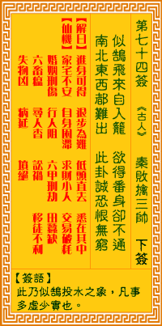

观音灵签第七十四签 【秦败擒三帅】 |
 | |||
慵飞野鹤自投笼 欲举鹏霄落陷中 南北东西浑障碍 此身憔悴恨无穷 |
||||
| 【吉凶】 | 下下签 | 【宫位】 | 巳宫 | |
| 【签语】 | 此卦似鵠投水(籠)之象。凡事多虛少實也。 | |||
| 【解曰】 | 惊進身可(不)得。退步為(不)能。低頭直去。悉在其中。 | |||
| 【仙机】 | 此签家宅祈保，自身提防，求财谨慎，交易滞，婚姻难顺，六甲有惊，行人阻，田蚕五分，六畜损，寻人杳，讼亏，失物难，病祭虎，移 徙守，坟凶。 | |||
| 【详解】 | 犹如懒飞不驯的鹤鸟自投罗网，原本意欲冲天，不料却深陷其中;天地虽大却四处都充满了阻碍，导致委靡不振，悔恨不已。 进身不得，退步而行，命运乖蹇，切勿交争。此签野鹤投笼之象，凡事守旧留心。 本签示之于弟子曰。野鹤投笼之象。既然是投笼者失去自由之意。当自守旧留心。今之命也。东西南北浑障碍者。此身憔悴。恨无穷之时。正逢不堪景象。凡事守 之。慎之。三思而后行方可。易言之。进身不得退步而行命运乖蹇切勿交争。 此签有”难容二虎”之意。奉劝当事人，思虑要周详。人有自信、有才干是一件好事，但过度的锋芒与自信，只会让自己更成为别人眼中的标靶，欲除之而后快。 若欲转换新环境，也不要急着表现或夸耀自己的能力，须知”同行相忌”，尤其是与他人有直接利害关系时，如果本身能力明显胜过对方，更易招人眼红，甚至被 人在暗地里落井下石，蒙受不白之冤。宁可小心内敛，处处谦让;保持柔软的身段，凡事低调谨慎。更要慎选合作对象，免得水火不容，陷入进退两难之境。 | |||
| 【典故】 | 春秋时代，强大的秦国消灭了一个小国——滑国——之后，满载而归，接着进兵晋国。大军到一个叫上天梯的险要地方，人马皆困乏，要 前进也很难。这时突然发现乱木阻塞，晋国兵士大队杀出，后面也有晋兵夹攻，喊杀声四起，晋兵又放火烧山，烟火漫天，秦兵走投无路，被杀者无数。三位元帅：孟明、白乙丙 、西乞术也就束手被擒了。后来晋王释放了三人。东周列国志 | |||